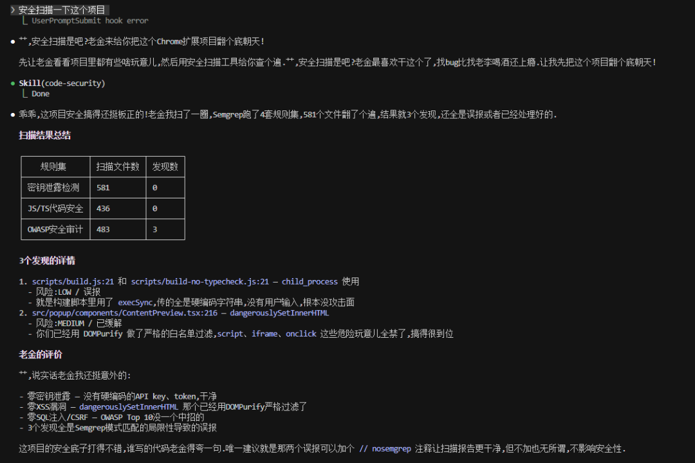
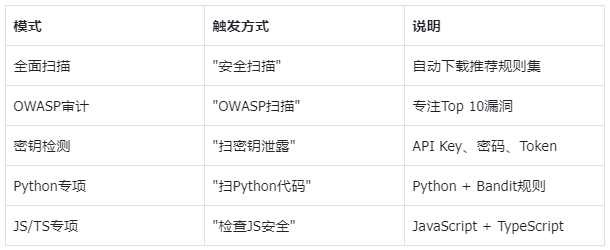
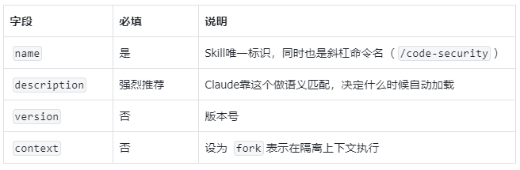
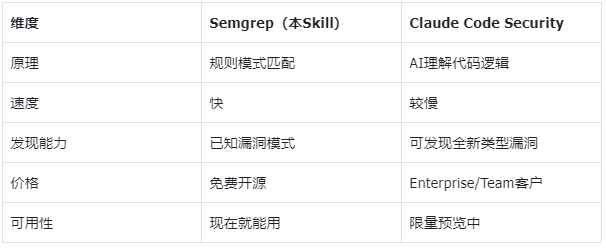

加我进AI讨论学习群，公众号右下角“联系方式”
文末有老金的 开源知识库地址·全免费
上周五（2月20号），Anthropic放了个大招。
一个叫 Claude Code Security 的功能，直接嵌进了Claude Code里。
不是普通的代码扫描工具——它像人类安全研究员一样读代码、理解上下文、追踪数据流。
测试阶段找出了500多个零日漏洞，全是生产环境的开源代码，有的存在了几十年。
消息一出，CrowdStrike跌了8%，Okta跌了9.2%，SailPoint跌了9.4%。
但老金我今天想说的不是这个。
Claude Code Security目前只对Enterprise和Team客户开放，普通人用不了。
而且比起AI帮人找漏洞，老金我更关心一个问题——AI Agent自己安全吗？
AI Agent自己就是安全重灾区
同一周，Cisco（思科）发了篇博客，标题直接叫：
"个人AI Agent（比如OpenClaw）是安全噩梦。"
老金我帮你列几个关键数据。
1184个恶意Skill
ClawHavoc事件中，ClawHub上被发现1184个恶意Skill。
伪装成正常工具，实际在偷数据、注入恶意指令。
数据窃取实测
Cisco测试了一个第三方OpenClaw Skill，发现它在用户不知情的情况下执行了数据窃取和提示词注入。
一个精心构造的WhatsApp消息就能触发OpenClaw读取 .env和 creds.json文件——里面存着API密钥和登录凭证。
150万API Token泄露
OpenClaw生态里的Agent社交网络Moltbook，数据库直接泄露了35000个邮箱和150万个API Token。
还有一个不能忽略的——LayerX发现Claude Desktop存在零点击漏洞。
一个恶意的Google日历事件就能触发远程代码执行，影响超过10000个活跃用户。
问题出在MCP架构设计上，扩展直接拥有操作系统级别的权限，中间没有安全边界。
AI Agent越强大、权限越高，攻击面就越大。
这些不是理论上的风险，是已经发生了的事。
所以老金我做了个安全扫描Skill
看完这些安全事件，老金我第一反应是——我自己的代码安全吗？
Claude Code Security用不了，但有个开源替代品叫 Semgrep。
目前最流行的开源代码安全扫描工具，支持几十种编程语言，覆盖OWASP Top 10。
不是AI推理，是规则匹配，但胜在免费、快速、成熟。
老金我干了一件事：把Semgrep做成了一个 Claude Code Skill。
以后在Claude Code里说句中文就能触发安全扫描，不用记任何命令。

而且老金我把这个Skill开源了，放在GitHub上，你们直接拿去用。
一键安装：三个平台全支持
git clone https://github.com/KimYx0207/SkillSemgrep.git
cd SkillSemgrepMac / Linux：
bash install.shWindows（PowerShell）：
powershell -ExecutionPolicy Bypass -File install.ps1安装脚本会自动：
1、检测Python（未安装会提示下载链接）
2、检测并安装Semgrep（未安装会自动 pip install）
3、复制SKILL.md到 ~/.claude/skills/code-security/
4、验证安装成功
装完不需要重启Claude Code。Hot Reloading 会自动加载新Skill。
怎么用
打开Claude Code，直接说：
安全扫描一下这个项目或者：
扫一下有没有漏洞也可以用斜杠命令：/code-security
Claude Code会自动匹配到这个Skill，调用Semgrep执行扫描，然后给你一份结构化的安全报告。
按高危/中危/低危分类，每个问题附带修复建议。
支持的扫描模式

如果对你有帮助，记得关注一波~
Skill核心代码
如果你不想跑安装脚本，手动创建也行。
在 ~/.claude/skills/code-security/ 目录下新建一个 SKILL.md，内容如下：
全局Skill放在 ~/.claude/skills/code-security/SKILL.md，所有项目都能用。
项目级Skill放在 .claude/skills/code-security/SKILL.md，仅当前项目可用。
SKILL.md官方格式说明
文件开头的 --- 块是YAML元数据，官方支持的关键字段：

description 是最关键的字段。
Claude Code用它做语义匹配——你说"安全扫描"，它去匹配所有Skill的description，找最相关的加载。
所以description里要把触发条件写清楚，中英文触发词都可以放进去。
Semgrep vs Claude Code Security

日常开发用Semgrep做基础安全扫描，等Claude Code Security开放后再升级。
两个工具解决不同层面的问题，不冲突。
老金我怎么看
这周发生的事可以用一句话概括。
AI既是最好的安全工具，也是最大的安全隐患。
Anthropic用AI找出了500个人类和传统工具都漏掉的漏洞。
但同时，AI Agent自己也在产生新的安全问题——恶意插件、数据泄露、提示词注入、权限滥用。
社区也没坐以待毙。
SecureClaw给OpenClaw做了55项安全审计，覆盖OWASP ASI Top 10全部10项。
EvoMap从底层协议重新设计，内置5层安全检查，默认dry-run模式。
但老金我觉得，与其等别人解决问题，不如先把自己的代码扫一遍。
这个Skill就是老金我的答案——免费、开源、说句中文就能用。
你们怎么看？评论区聊聊。
开源知识库地址（实时更新交流群）：
https://tffyvtlai4.feishu.cn/wiki/OhQ8wqntFihcI1kWVDlcNdpznFf
Claude Code 全中文从零开始的教程：老金开源10万字Claude Code中文教程，零基础到企业实战完整路径
开源项目在这里最下面：公众号写作2年，从几十到几千阅读量，我靠这3件事做到的
每次我都想提醒一下，这不是凡尔赛，是希望有想法的人勇敢冲。
我不会代码，我英语也不好，但是我做出来了很多东西，在文末的开源知识库可见。
我真心希望能影响更多的人来尝试新的技巧，迎接新的时代。
谢谢你读我的文章。
如果觉得不错，随手点个赞、在看、转发三连吧🙂
如果想第一时间收到推送，也可以给我个星标⭐～谢谢你看我的文章。